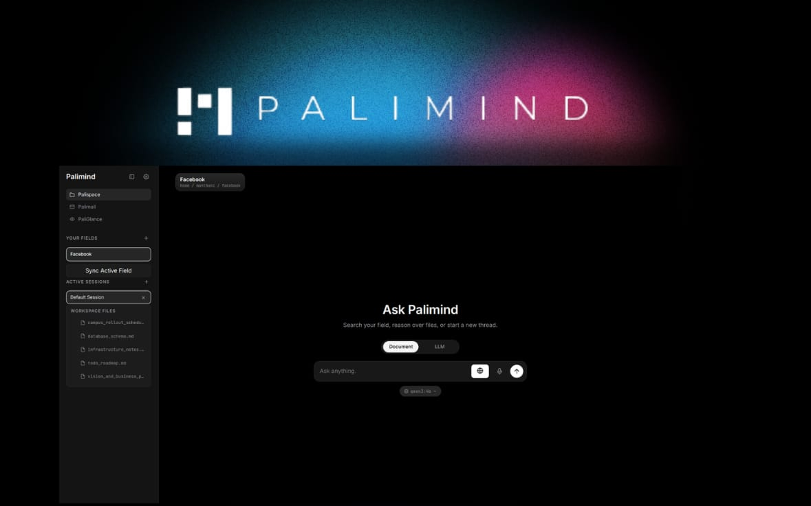

Desktop · 03
Native Desktop App
A Tauri 2 shell wraps the whole experience with native OS integration and global hotkeys.

Capabilities
- Global hotkeys — capture text or summon the glance popup from anywhere on your desktop.
- One-command launch —
pm uiinstalls deps, starts Ollama, serves the API and opens the app. - Installers — AppImage, deb, rpm, NSIS, MSI and DMG from a single codebase.
- Self-contained backend — the shell spawns and supervises the Python FastAPI server.